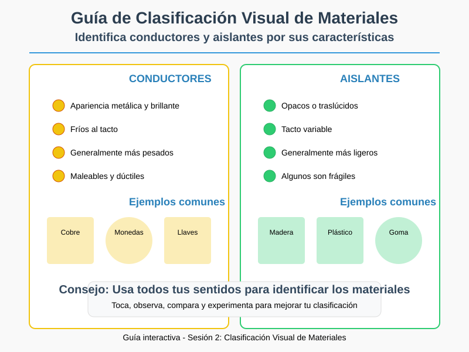
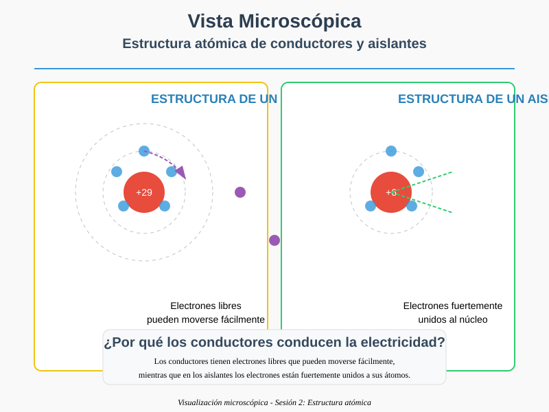
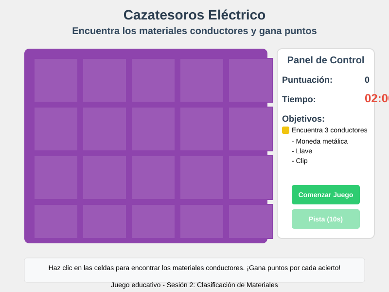

Objetivo específico
Al finalizar esta sesión, los estudiantes podrán identificar visualmente materiales conductores y aislantes, aplicando criterios de clasificación en diversos contextos.
Contenido teórico
La clasificación visual de materiales se basa en propiedades observables que nos permiten predecir su conductividad eléctrica.
Características de los conductores
- Apariencia: Metálica y brillante
- Textura: Fría al tacto (buen conductor térmico)
- Peso: Generalmente más pesados
- Maleabilidad: Se pueden doblar sin romperse
Características de los aislantes
- Apariencia: Opacos o traslúcidos
- Textura: Variable (madera, plástico, goma)
- Peso: Generalmente más ligeros
- Fragilidad: Algunos se rompen fácilmente
Ejemplo visual
Imagina que los materiales conductores son como carreteras para los electrones, mientras que los aislantes son como barreras naturales:
- Los metales son como autopistas de varios carriles (alta conductividad)
- El grafito es como un camino de tierra (conductividad media)
- Los plásticos son como montañas infranqueables (aislantes)
Guía de Clasificación Visual

Compara las características visuales de conductores y aislantes.
Vista Microscópica

Observa las diferencias a nivel atómico entre conductores y aislantes.
Actividad práctica: El detective de materiales
Materiales necesarios: Lupa, imán, linterna, objetos cotidianos variados (monedas, lápices, clips, gomas, etc.)
Instrucciones:
- Observa cada objeto con atención usando la lupa
- Registra tus observaciones en la tabla
- Usa el imán para verificar propiedades magnéticas
- Clasifica cada material según tus observaciones
| Objeto | Color | Brillo | ¿Atrae imán? | Predicción |
|---|---|---|---|---|
| Moneda | ||||
| Lápiz de madera |
Pregunta de reflexión
¿Qué características visuales te resultaron más útiles para predecir si un material es conductor o aislante? ¿Hubo alguna característica que te sorprendió?
Recursos interactivos
Juego: Cazatesoros Eléctrico

Encuentra los materiales conductores ocultos en el tablero. ¡Cada acierto suma puntos!
Jugar ahoraSimulador de Materiales
🔍 Explora cómo diferentes materiales afectan el flujo de corriente eléctrica.
Abrir simuladorReto gamificado: El cazatesoros eléctrico
Misión: Encuentra en tu casa 3 objetos que contengan tanto materiales conductores como aislantes. Toma fotografías y explica la función de cada material en el objeto.
Puntos:
- 10 puntos por objeto correctamente identificado
- 5 puntos adicionales por explicación detallada
- Bono de 15 puntos por encontrar un objeto inusual